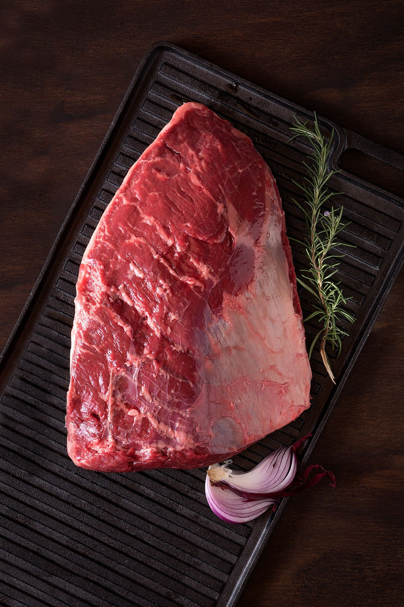

Mapa CarneCerta
Maciez e sabor em cada fatia
A maminha é um corte muito versátil, com boa suculência e excelente resposta em grelha e assados.

Ideal para • churrasco • assado • bife
Maciez
4/5
Boa textura
Gordura
3/5
Equilibrada
Sabor
4/5
Marcante
Abrir recomendador inteligente
Maminha
Corte clássico, muito apreciado por ter sabor marcante e textura suculenta em preparos simples.
A maminha combina bem com grelha, assados e cortes em fatias grossas. Sua estrutura favorece um resultado saboroso com pouca complicação.
Grelha
Assados
Fatia grossa
4.8
Escolha de churrasqueira
Excelente para quem quer um corte saboroso, suculento e com resposta muito boa ao fogo.
Ideal para
Dica do açougueiro IA
Para um melhor resultado, deixe a carne em temperatura ambiente por alguns minutos antes de assar.